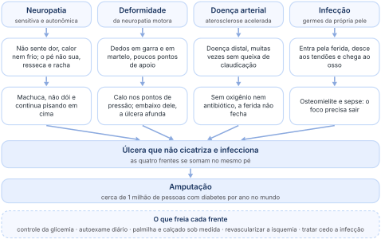
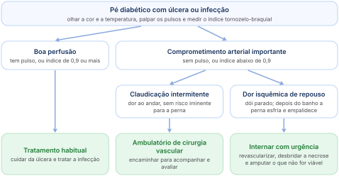

Trauma
Uma lesão banal: bolha, rachadura, um corte.
Neuropatia, deformidade, doença arterial e infecção: as quatro frentes que levam à amputação, e como cuidar de cada uma.
Feita da transcrição da aula, com os erros da transcrição corrigidos. Legenda de cores na página 2.
Na agenda do Med Genius, a P2 de Angiologia está marcada para quarta-feira, 25 de novembro de 2026, às 7h30. As outras teóricas de Angiologia são do Dr. Jeferson F. Toregeani (14 e 28 de outubro).
O pé diabético é comum no consultório, do cirurgião vascular e também do ortopedista, e é catastrófico. Não acontece só no pé, mas o pé é o lugar mais comum: há pouco tempo ele tratou um homem com as mesmas alterações no pé e na mão. Na mão é incomum e a gente não está acostumado a ver, mas o manejo é muito parecido.
O diabetes causa alterações em quatro níveis: neurológico, ortopédico, vascular e infeccioso. “Essas são quatro coisas que vocês têm que prestar atenção no pé diabético.” Ele voltou a elas no meio e no fim da aula, já com os nomes que organizam esta apostila.
O pé perde a sensibilidade, a força dos músculos pequenos e o suor (seções 02 e 04).
Dedos em garra, pontos de pressão, calos e, no fim, destruição dos ossos (seção 03).
A aterosclerose, acelerada pelo diabetes, tira o sangue que cicatrizaria a ferida (seções 06 a 09).
Entra pela ferida, é muito comum no pé do diabético e é o que mais leva à amputação (seções 10 e 11).

É uma epidemia mundial, puxada pela quantidade de alimentos ultraprocessados, que tornam o diabetes difícil de controlar.
Isso deve mudar com a “invenção do momento”, o Mounjaro e “seus familiares”. As pessoas não querem tratar o diabetes, querem emagrecer, e de tabela ganham benefícios para o diabetes, para a aterosclerose e para o coração. O Ozempic, lá no começo, era para diabetes, sem protocolo para obesidade; o pessoal passou a usá-lo só para perder peso, os protocolos de obesidade vieram depois, e os remédios seguintes já chegaram com eles.
Hoje se traduz lepra como hanseníase, mas, na época de Jesus, leproso era todo mundo com “pereba”: quem tinha leishmaniose, pé diabético ou hanseníase. Tudo o que deixava as extremidades necrosadas, apodrecidas ou ulceradas era lepra. Só com o tempo médicos e cientistas separaram a lesão do diabetes, a da hanseníase e a da leishmaniose.
O problema central do diabetes é a polineuropatia: a sensibilidade piora, e o paciente perde a sensação de dor, de calor e de frio. Quem bate o pé e se machuca, ou se fere ao pisar, e não sente dor, continua pisando. Essa perda de sensibilidade traz um risco muito alto de perder o membro. A neuropatia não é só sensitiva (o paciente não sente): pode ser motora (perde força e função) e autonômica (perde o controle do suor e dos vasos).
São alterações neurológicas das extremidades; não só delas, mas é nos pés que se nota. E o diagnóstico é de exclusão: quando se afastam as outras causas de neuropatia, ela é atribuída ao diabetes.
Na piada, o dedo do hanseniano “cai”. Não é isso: ele se machuca tanto que acaba perdendo o dedo. Ele lembrou o Aleijadinho, que batia o dedo nas obras sem querer, se feria e continuava trabalhando, e a ferida não fechava. Se parasse de trabalhar, cicatrizaria, porque na hanseníase não há outra doença junto: a circulação é normal. A perda de sensibilidade faz o paciente se machucar, não sentir, se traumatizar de novo e não se cuidar.
Pense na moça que vai a um baile de casamento: põe o sapato bonito, tira as fotos e logo tira o sapato porque dói; põe o chinelinho para dançar. No calcanhar já se formou uma bolhinha. No dia seguinte vai um curativo adesivo, e incomoda um monte. Se não incomodasse, ela nem perceberia a bolha e continuaria atritando a ferida, que nunca cicatrizaria.
Machuca, não dói, e o paciente continua pisando em cheio onde está machucado.
Uma lesão banal: bolha, rachadura, um corte.
O paciente não percebe e não protege o pé.
A necrose e a infecção vêm em cima da lesão banal.
A hiperglicemia, que é fundamental controlar no diabetes, é a principal vilã da neuropatia: ela ataca as células nervosas. Há vários testes para ver o tipo e o grau da lesão neurológica (seção 05).
O pé tem movimentos de flexão e extensão e de adução e abdução (abrir e fechar os dedos). No começo, perde-se principalmente a adução e a abdução, mas ninguém fica testando se consegue abrir e fechar os dedos do pé. O paciente só procura ajuda quando o pé já está mais caído, difícil de fazer os movimentos completos, porque começa a ter dificuldade para caminhar. E geralmente nem o médico sabe o que está acontecendo: ninguém chega dizendo que o dedo não levanta direito por causa da neuropatia do diabetes.
“Vocês têm que guardar isso para entender e conseguir reproduzir em uma consulta médica.”
O sistema nervoso simpático, na mão e no pé, faz suar, contrai os vasos (vasoconstrição) e arrepia os pelos (piloereção). Na neuropatia do diabetes acontece tudo ao contrário: o pé seca, não sua e fica com os vasos dilatados. “Guarda assim.”
Todo mundo conhece alguém com hiperidrose palmar ou plantar, que “só de sair daqui” já está com a mão molhada: é o simpático “pilhado”. Na cirurgia de simpatectomia cortam-se os nervos simpáticos, e a mão que era molhada e gelada passa a ser seca e quentinha. A neuropatia faz um bloqueio simpático parecido: o pé resseca e fica quente e vermelho.
O suor não traz só água: vem com um pouco de oleosidade. Os dois juntos controlam o calor e protegem a pele, hidratando-a. Sem suor, a pele resseca e racha, como a mão que fica áspera e craquelada depois de um banho longo e quente num dia frio.
A neuropatia autonômica se associa a aumento da mortalidade no diabético, porque não atinge só o simpático do pé: o estômago esvazia devagar (gastroparesia) e a frequência cardíaca também muda. Por isso, qualquer que seja a área que vocês escolherem, é preciso entender o diabetes para conduzir aquele paciente.
O diabetes altera muito a visão. Às vezes o diagnóstico de diabetes sai do exame de fundo de olho.
Na endoscopia de um paciente com candidíase no esôfago, depois de 9 horas de jejum ainda há comida no estômago: é a neuropatia do diabetes.
A neuropatia motora altera a musculatura intrínseca do pé, os músculos pequenos do próprio pé. A pressão na planta muda e o pé muda de formato. Quando falta o equilíbrio entre os músculos que flexionam e os que estendem, o pé não fica no meio: desaba, como um corpo que relaxa de vez.
O extensor dos dedos puxa para trás e o flexor está acometido. O dedo fica puxado para cima, e o apoio deixa de ser o dedo inteiro: passa a ser só a pontinha, a polpa digital. A região da cabeça dos metatarsos fica mais saliente e o arco da planta aumenta. Sobram poucos pontos de apoio, sobrecarregados, e é neles que a lesão aparece. Em vez de pisar cheio, o paciente pisa meio torto.
Alterações do colágeno e da deposição de queratina na planta vão formando calosidades onde há mais pressão. No diabético, forma-se uma úlcera com um anel de calo em volta, e a úlcera vai afundando. É como o calo na mão de quem faz musculação ou no dedo de quem escreve muito com caneta: onde há calo, a força está mal distribuída.
Só lixar e raspar o calo. É preciso distribuir melhor o peso com uma palmilha adequada; se não, o paciente continua se traumatizando sempre no mesmo lugar.
A falta de suor da neuropatia autonômica (anidrose) soma-se a isso: pele desidratada, rachaduras, infecção, sangramento e úlcera pelo trauma repetido.
Se o pé deformou, o ideal é mandar fazer uma palmilha de acordo com a pressão do pé. Se a pisada está apoiada em dois pontos fortes, a palmilha preenche o resto e distribui o peso. Até quem não tem doença sente mais conforto com uma palmilha que preenche melhor. A palmilha deve ser pensada em todo paciente com pé diabético.
O calçado comum não cabe no pé deformado, e é por isso que ele machuca. Para quem tem deformidade, o calçado é feito sob medida: distribui o peso do corpo na parte do pé que aguenta, livra as pontas dos dedos e protege. Se o paciente bater o pé, o calçado se estraga, mas o golpe não chega ao pé.
“Você tem que fazer o tênis pra caber no teu pé, não o pé pra caber no tênis.”
Acontece com amputados: o técnico da prótese devolve o paciente porque o coto está longo demais e pede que se reampute a perna para caber numa prótese. É como o sapateiro pedir para cortar um pedaço do dedo que não coube no sapato que ele fez. “Isso aqui é muito importante.”
Numa loja de esportes nos Estados Unidos, um técnico especialista em calçados perguntou o tamanho do pé dele e se ele pisava pronado, supinado ou neutro, e ele não sabia. Depois de pisar numa placa que marcou a pegada, o diagnóstico: pé supinado, que não apoia a parte de dentro, só a de fora. Com tênis neutro ou para pé pronado, teria dor, porque a palmilha não ajudaria. Também havia versões mais largas para quem tem pé largo, como ele, que sempre comprava um número a mais. Há um ano e meio, numa loja da mesma marca no Brasil, o aplicativo mostrava os três tipos, mas aqui só se vende o neutro.
Sobre o salto alto, ele comentou que o problema é jogar todo o peso do corpo nos ossinhos da frente do pé, o que deforma os ossos; por isso o tênis e o chinelo parecem mais confortáveis.
A radiografia simples pode mostrar alterações dos ossos e a aterosclerose avançada, com a artéria toda calcificada. No dia da aula ele viu uma subluxação de dois dedos, fora do alinhamento da articulação. Também pode haver lise óssea, por microfraturas ou por infecção grave (a osteomielite, que forma sequestro de osso), e destruição da cartilagem, com a úlcera começando a destruir pedaços de osso.
Vermelhidão (hiperemia), inchaço e secreção, com mudança de cor e de temperatura: é preciso tratar a infecção.
Mais calos e deformidade dos ossos; às vezes só um desvio, uma subluxação que fica daquele jeito.
Quando a neuropatia leva a microfraturas e à destruição dos ossos e das articulações do pé, o quadro se chama pé de Charcot (neuro-osteoartropatia de Charcot). Na fase aguda, o pé fica vermelho, quente e inchado e pode ser confundido com infecção; na crônica, fica deformado, às vezes com o arco da planta desabado.
O controle metabólico do diabetes é o que previne a neuropatia. Se ela já existe e o diabetes não é controlado, só piora. O dano ao nervo não tem volta: trata-se o diabetes para proteger os nervos que ainda funcionam, e trata-se o que já se alterou porque a neuropatia é muito desconfortável. Na prescrição, primeiro vem o controle do diabetes; em segundo lugar, o que ajuda a controlar as complicações.
Não curam, não fazem a neuropatia voltar atrás e não a previnem.
Diminuem o desconforto e melhoram a qualidade de vida enquanto o paciente toma.
Só o controle do diabetes, o controle da glicemia.
Há quem fique anestesiado ou com menos sensibilidade (hipoestesia); há quem tenha sensações estranhas, como dormência, queimação e choquinhos; e há quem tenha hiperestesia, com dores horríveis. Todas são ruins, mas as mais incapacitantes levam mais o paciente ao médico. Nas fases avançadas, pisar descalço parece pisar em algodão, o chão fica “fofo”; com queimação extrema, o paciente pisa no chão gelado para aliviar.
A amitriptilina, a duloxetina e os anticonvulsivantes (pregabalina e gabapentina) são amplamente usados, “porque eles resolvem mesmo”. Ele gosta de dar pregabalina.
Resolvem a queimação. A pregabalina também melhora a dormência da perna na hérnia de disco; pode dar muito sono, o que varia de pessoa para pessoa, aumenta o apetite e, raramente, acelera o coração.
Também é boa. Ele a usa quando a pregabalina não serve ao paciente; acha a pregabalina mais fácil de manejar e de prescrever.
A mais barata e a mais disponível, tem no posto de saúde e resolve a queimação. Mas é “a campeã de arritmias”: piora a de quem tem e provoca em quem não tinha, inclusive flutter. Também aumenta o apetite.
A capsaicina existe em comprimido e para uso na pele; por boca tem muitos efeitos colaterais, então se prefere passar no lugar que queima. A clonidina ajuda, mas dá muito sono.
Comece pela menor dose e suba com cuidado: a sonolência varia muito.
Quem toma pregabalina de manhã e dirige uma hora e meia corre perigo: não ponha esse remédio em quem vai viajar dirigindo ou operar máquinas de risco. A clonidina também pede cuidado, ou causa acidentes. E avise do apetite, senão o paciente engorda e volta bravo com você.
Ele deu ao pai 75 mg de pregabalina, a menor dose, e a dormência melhorou um pouco. O pai quis “melhorar mais” e passou a 150 mg. A mãe ligou: era meio-dia e o pai não saía da cama, dormia quase 20 horas por dia. Há quem tome 150 mg de 12 em 12 horas sem sono nenhum: é muito individual. No dia da aula, uma paciente contou que a pregabalina acelerou o coração dela; é raro, mas acontece, e para ela a troca é a duloxetina. E o anestesista gosta da clonidina injetável por dois motivos: baixa rápido a pressão e faz o paciente dormir por horas.
A acupuntura ajuda em muitas coisas, mas não está estabelecida na neuropatia, em que melhora muito pouco. Um colega da clínica apostou nela para melhorar a qualidade de vida dos pacientes, sem bom resultado.
Pele ressecada, deformidade, pisada torta, sensibilidade alterada: tudo isso tem tratamento, o que não quer dizer que vai curar. “Esse é o ponto que tem que conversar sério com o paciente.” Com o tempo, ele percebeu que não adianta dizer o que fazer: é preciso explicar por quê, senão o paciente não adere.
Se você só diz “tome pregabalina porque o pé está queimando”, ele volta em dois ou três meses: “tomei um mês, melhorou, parei e voltou tudo”. Faltou explicar que o remédio não vai sarar o pé: deixa o paciente confortável enquanto ele toma, não devolve o pé de antes do diabetes. Como serve só para o desconforto e não protege o pé, se ele quiser parar, pode parar.
“Não vai curar, mas ela é importante que você tome: isso tem que ser dito.”
É diferente da amiodarona na arritmia: a arritmia é perigosa, e o remédio, que também não cura, não pode ser parado por conta própria.
A avaliação clínica é a parte importante para quem está cursando medicina: conversar com o paciente, conhecer as condições dele, colher a história e examinar os pés.
O paciente com pé diabético geralmente tem mais de 50 anos e nunca precisou olhar os pés de perto: toma banho, põe a roupa e acabou. Não basta. “Isso você tem que ensinar o paciente”: todo dia, na hora do banho, ele procura no pé:
Um paciente de Guaíra, que ele acompanha há anos, já não tinha metade de um pé e teve osteomielite num dedo do outro. Tratou-se e cicatrizou. Voltou com o pé “bom”, de quatro dedos (o outro não tinha mais nenhum), em carne viva na lateral do pé esquerdo. Num dia de chuva, foi de carro pescar num lago a 500 metros de casa; com o temporal, o carro não pegou e ele voltou a pé. Ao tirar a roupa molhada, o chão ficou cheio de sangue: dentro da bota havia uma chumbada de pesca. Andou 500 metros com o chumbo ralando o pé e não sentiu nada. Qualquer um de nós sentiria na hora em que a chumbada caiu na bota.
Só a história já mostra um paciente de altíssimo risco. Desta vez, a úlcera era na planta, com os quatro dedos encolhidos para cima. Em dois deles, de tanto trauma, a articulação metatarsofalangiana se soltou, e a ferida chegava até o osso: o instrumento passado na ferida batia no osso.
“Nessa hora você não é médico, você é só filho.”
Todos são feitos sem que o paciente veja o que você encosta nele: ele não pode saber nem se você está encostando ou não.
O teste padrão do rastreamento usa o monofilamento de 10 g (de Semmes-Weinstein), encostado na planta até se curvar. Não sentir em algum dos pontos testados indica perda da sensibilidade protetora.
Além da sensibilidade, da força, dos pontos de apoio, da pele seca e dos calos, o diabetes acelera a doença arterial periférica, e isso põe o pé em risco de amputação. Somam-se a instabilidade da pisada, a maceração da pele e os fatores de fora: andar descalço, de chinelo ou de sandália, com os pés rachados.
O pé diabético não é, 100% das vezes, doença arterial. Mas, se houver isquemia, a ferida jamais vai cicatrizar.
Não quer dizer que não vá ter necrose e úlcera: a neuropatia basta.
Trate a infecção e a úlcera e trate a artéria, para levar nutrientes e oxigênio à ferida.
O tratamento não vai adiantar.
A doença aterosclerótica, a doença arterial obstrutiva periférica, é acelerada pelo diabetes; no diabético, fique sempre de olho também no coração. Quando o diabético tem uma lesão no pé, considere que a doença arterial pode estar agravando o quadro, inclusive a infecção e a ferida, e estadie o risco do paciente.
Com isquemia, considere revascularizar além de dar o antibiótico. Se o oxigênio não chega, por exemplo por uma obstrução da femoral, o antibiótico também não chega. A isquemia piora a infecção, e as infecções ficam muito mais graves. São pacientes complicados, tanto na clínica quanto na cirurgia, e se cuidam pouco.
Ele comparou a doença arterial do diabético com a de quem não tem diabetes: muda o lugar, a frequência e até a queixa.
Ele não caminha.
Se caminha, não dói: a neuropatia tira a dor.
Já tem dificuldade de andar pelas outras alterações do diabetes.
Primeiro, olhe: palidez, cianose, pé quente ou frio, assimetria de cor e de temperatura. Depois, palpe os pulsos: tem ou não tem?
Pode estar com isquemia.
Pode estar com infecção.
Isquemia num e infecção no outro.
Ele perguntou se a turma já tinha tido aula disso. O nome já diz: o índice tornozelo-braquial compara a pressão da artéria do tornozelo (tibial posterior e tibial anterior) com a pressão do braço. Se a pressão do braço é 100 e a da tibial posterior é 90, o índice é 0,9: 90% da pressão do braço.
Vale o melhor índice. Se a tibial posterior dá 90, a anterior não tem pulso e o braço dá 100, o índice continua sendo 0,9. Em teoria, a perna tem três artérias (fibular, tibial anterior e tibial posterior): se uma delas está boa, a irrigação do pé não fica prejudicada.
O raio X do pé do diabético pode mostrar artérias calcificadas. A artéria normal é flexível: apertada, achata fácil, como um canudinho de suco de plástico. A calcificada é dura, como um canudinho de metal: você aperta e ela continua pulsando. No índice, você enche o manguito até 100, 200, 300, e o som do fluxo não para, porque não se consegue esmagar a artéria. Dá um índice falso: 300 sobre 100, índice 3.
Até 1,3 dá para aceitar, porque pode haver alguma diferença entre o pé e o braço. Acima de 1,3, a artéria não foi comprimida por causa da doença que a calcifica, e o número não vale.
Como é a camada média da artéria que calcifica, o nome é mediocalcinose de Mönckeberg, o nome de quem a descreveu. Ele perguntou à turma se alguém sabia o nome, mas avisou que não costuma cobrar isso.
“Eu não costumo colocar essas coisas na prova, mas vai que o universo fica maluco.”
Se o paciente ainda tem dedo, dá para fazer o índice do dedo com o braço, mas é preciso um doppler muito sensível e um manguito de dedo (ou inflar no tornozelo e medir no dedo). Também dá para ver a pressão transcutânea de oxigênio, ou pôr o oxímetro no dedo para ver a oxigenação, mas isso não é formal.
O índice tornozelo-braquial é feito às cegas: você põe o doppler onde deveria estar a artéria e, se sai som, provavelmente é a tibial, mas sem certeza: pode ser uma colateral, com a tibial ocluída. O ecodoppler colorido (dúplex) faz a imagem do vaso e mostra o fluxo dentro dele; dá para medir velocidade, e você não trabalha no escuro.
Ele perguntou à turma: com doença arterial periférica, aterosclerose avançada e oclusão de algumas artérias, qual é a melhor imagem para estudar e planejar? A arteriografia (angiografia). Ela mostra o sangue passando, de forma dinâmica, até o sistema venoso, e as lesões: estenoses e dilatações.
Antes, veja a função renal: esses pacientes são candidatos a exames e procedimentos com contraste, como angiotomografia, cateterismo e angioplastia. Quem tem doença arterial junto precisa ainda controlar as gorduras do sangue (seção 09).
O sangue não aparece no raio X. A arteriografia o torna visível misturando um produto: o contraste iodado, que fica com densidade de osso, como se se soltasse “osso líquido” dentro da artéria, pintando-a por dentro. Mas o contraste iodado é nefrotóxico. O último paciente em que ele fez angioplastia, dois dias antes da aula, tinha creatinina de 3,8; para ele, pediu um injetor de gás carbônico. O gás faz a mesma coisa: aparece dentro da artéria, desenha a luz do vaso e desce junto com o sangue. Ele já tinha falado disso com a turma e repetiu.
E a embolia gasosa? O gás carbônico é como o da Coca-Cola: não fica em bolhas separadas no meio do líquido, se difunde e se mistura muito bem no sangue. Na perna, faz uma leve isquemia, volta pelo sistema venoso, chega ao pulmão e vai embora na respiração. Por ser muito volátil e difusível, serve bem para estudar abaixo do diafragma: rim, artérias viscerais e intestinais, pelve, coxa e perna, e também o braço.
Ele perguntou à turma por quê. Não é por embolia: é a leve isquemia. Se o cérebro ficar um tempinho sem oxigênio e o paciente tiver um acidente vascular cerebral, como provar à família que não foi o exame? Ninguém testou, e não vale a pena testar no seu paciente.
Os três exames lado a lado:
Depois do exame, o paciente com pé diabético cai em um de dois grupos: com boa perfusão (tem pulso, ou índice de 0,9 ou mais) ou com comprometimento arterial importante (sem pulso, ou índice abaixo de 0,9). Com boa perfusão, segue o tratamento habitual da úlcera e da infecção.
O claudicante, sem risco iminente, segue no ambulatório especializado. Quando vocês estiverem atendendo, alguém vai ligar: “tenho um paciente com claudicação, para onde mando?”. Quanto ele anda? Se é claudicação intermitente, encaminhe ao ambulatório de cirurgia vascular, para acompanhar e avaliar.
Já o paciente com dor isquêmica de repouso sente dor parado; dói ir até o banheiro; depois do banho a perna esfria e fica muito pálida e dolorida. Esse vai direto para o cirurgião vascular, com urgência: se estiver no ambulatório, mande e interne. Mandar para casa um paciente com risco de perder o membro faz você responder por isso.
“Se você internou e não conseguiu vaga, aí o problema é o sistema que não está funcionando, mas você fez correto.”

Com isquemia de repouso, o objetivo é internar e revascularizar, por cirurgia ou angioplastia; se houver necrose ou úlcera, desbridar; se um dedo ou a perna não for mais viável, amputar. Falar em amputação no primeiro contato faz o médico parecer o vilão (“nem me conhece e já quer cortar minha perna”), e nem há 100% de chance de cicatrizar.
Mas, se aquilo está causando sepse, com a infecção subindo pela perna (linfangite) e o paciente em choque, sem tirar o foco de infecção não se controla nem a sepse. Com falência de órgãos, às vezes não dá nem para conversar: é preciso fazer e comunicar depois.
A revascularização pode ser por cirurgia aberta ou endovascular (angioplastia), ou pelas duas no mesmo tempo quando há doença em dois lugares: por exemplo, a endarterectomia da femoral e, pelo cateter, a angioplastia mais abaixo. Revascularizar e tratar a infecção juntos costuma dar bom resultado. E desbrida-se tudo o que estiver desvitalizado ou necrosado.
No pé diabético com úlcera, a cirurgia aberta é pior. Ela começa por uma incisão na virilha, justamente na região de drenagem linfática do pé, cheia de gânglios com infecção: a ferida cirúrgica infecciona muito. Se a ponte (com veia safena, por exemplo) infeccionar, pode abrir e sangrar. Por isso ele prefere entrar pelo lado bom e cruzar por dentro dos vasos até o lado doente, sem cortar a virilha que está drenando a infecção.
Se for preciso fazer ponte, não use prótese sintética: use material biológico, a veia do próprio paciente. Com infecção, a prótese sintética infecciona, você perde a ponte e põe o paciente em risco de morte: “é até proscrito”.
É o mesmo raciocínio da fratura de fêmur com ferida infectada: com infecção, primeiro se tira todo o material de síntese (prótese, parafusos, placa), limpa-se a infecção e só depois, com o corpo livre dela, se faz nova síntese.
Numa angiografia do abdome e da pelve com subtração digital (o computador apaga o intestino da imagem), havia uma lesão de 80 a 90% numa artéria ilíaca comum e de 40% do outro lado. A angioplastia recupera o fluxo e melhora a pressão lá embaixo: melhora a cicatrização e o remédio chega melhor.
Em outra, a femoral superficial estava ocluída, com vários vasos colaterais reenchendo a parte mais distal da femoral, na transição para a poplítea. O fio-guia passou por dentro da oclusão, recanalizando-a, e a angioplastia devolveu o fluxo. Com fluxo no eixo principal, o contraste não vai mais para as colaterais e elas parecem sumir; continuam lá, mas o fluxo reto é mais rápido que o redemoinho das colaterais.
“Diabetes é uma delas, hipertensão é outra, cigarro é outra, dislipidemia é outra… dessas quatro vocês têm que decorar.”
Os antiagregantes plaquetários podem ser usados de forma contínua e preventiva em todo paciente com aterosclerose. Sem nenhum remédio, um evento pode ser catastrófico, sem tempo nem de conduzir o paciente. E a estatina. Quem tem doença arterial precisa controlar as gorduras do sangue: baixar os triglicerídeos e o colesterol LDL (o “ruim”) e aumentar o HDL (o “bom”).
Ele perguntou à turma quantas estatinas existem: umas sete, como sinvastatina, atorvastatina, rosuvastatina e pitavastatina. Se fossem iguais, por que sair da sinvastatina? A sinvastatina é a que ninguém quer, nem de graça no posto, por causa dos efeitos colaterais. E perguntou quais são.
Com qualquer um dos dois, interrompa. Mas não deixe o paciente sem tratar: passe para uma estatina de fabricação mais atual, com menos efeitos colaterais.
A rosuvastatina não chega a 100 reais por mês. A rosuvastatina com ezetimiba é uma associação muito boa: diminui-se a dose da estatina e associa-se outro remédio que também baixa o colesterol.
Há ainda um remédio injetável para o colesterol alto: uma dose, outra depois de três meses e daí em diante a cada seis meses. É “fantástico”, mas custa 8 a 10 mil reais cada injeção. Um colega cardiologista de 30 anos, filho de cardiologista, com pais e irmãos que já tinham infartado, não controlava o colesterol com estatina e ezetimiba; com a injeção, o colesterol LDL caiu para 40, 30.
Pelo esquema que ele descreveu (dose inicial, outra em três meses e depois a cada seis meses), o injetável deve ser a inclisirana.
O cilostazol é um vasodilatador. Começa-se por menos e sobe-se aos poucos, porque há um período de adaptação, com um pouco de náusea, mal-estar e queixas do estômago.
Comprimidos de 50 e de 100 mg. A dose final vem depois da subida em três passos.
“Vocês anotem”: na fase de adaptação, o cilostazol pode descompensar a insuficiência cardíaca de alguns pacientes, até o edema de pulmão. Quem já internou por insuficiência cardíaca, ou tem insuficiência cardíaca evidente, não pode usar. “Não pode.”
Ele descobriu que a insuficiência cardíaca de um paciente dele era causada pelo cilostazol. Não basta tirar o remédio: é preciso tratar a descompensação, com ventilação não invasiva, diurético para fazer muito xixi e reposição de potássio, até tudo se reequilibrar.
O alprostadil é uma prostaglandina E1 que força os vasinhos minúsculos a dilatar, e hoje pode ser usado em várias situações. Uma paciente de um colega está “beirando a amputação” há mais de um ano: fez angioplastia, outra angioplastia, uma ponte que entupiu, angioplastia da ponte, que entupiu de novo. Não sobrou nada funcionando no eixo principal, mas o pé ainda não se perdeu.
Quando a dor aperta e o pé começa a fazer feridinhas, ela interna para receber o alprostadil na veia. Em uma ou duas semanas melhora muito: para de doer, o pé esquenta, a ferida se controla e começa a cicatrizar. Foram quase cinco internações, e o remédio salvou o pé em todas. Com revascularização junto, a cicatrização é super rápida.
Na veia, com o paciente internado.
O problema é que o convênio não libera, porque é caro manter quatro semanas de internação tomando injeção. O ideal seria ir ao hospital, receber a medicação (são três horas) e voltar para casa, sem gastar internação, comida e outros remédios. “Um dia ainda vão inventar o comprimido.”
A ordem da aula: primeiro a neuropatia, segundo a deformidade, terceiro a doença arterial e, por último, a infecção. Há quem não tenha nenhuma alteração da circulação e vá direto para a amputação por causa da infecção: às vezes ela é tão grave que não há outra saída.
“O pé diabético perde mais a perna não por isquemia: por causa da infecção.”
A infecção pode ser profunda e grave, mas pode começar por uma lesão superficial, como uma infecção de pele, aquele vermelhão que sobe pelo dorso do pé. Ou pode pegar os planos dos tendões e dos músculos, até rasgar e vazar.
Úlceras profundas têm mais chance de causar osteomielite, como a do pescador de Guaíra: só de encostar a pinça na ferida, ela bate no osso. Ele mostrou com uma haste de metal, ou com uma pinça Kelly, que o instrumento tocava o osso direto. Nem sempre o diagnóstico vem do raio X: osso exposto ao meio externo e fragmentos de osso saindo pela ferida já dizem que a infecção está lá.
O diagnóstico deve ser precoce e rápido: cada minuto faz diferença no antibiótico, encurta a cura e diminui o tempo de internação.
Não é bruxaria nem mágica: o germe precisa de uma porta de entrada, quase sempre um corte na pele. E, na maior parte das vezes, não é a bactéria da mangueira, do mamoeiro ou do chão do hospital que veio voando até a ferida: é o germe que vive na pele do próprio ser humano.
No centro cirúrgico, você escova as mãos com espuma e água, ou passa o produto à base de álcool. Esterilizou a mão? Não: baixou para menos de 1% as bactérias que vivem na pele, e em 4 horas está renovado, cheio delas de novo. Por isso o tempo importa: numa cirurgia que passa de 4 horas, o ideal é sair, lavar-se de novo e trocar de avental e de luvas.
Trate também as rachaduras e as micoses, da unha e entre os dedos. Ele perguntou à turma o que usam para micose de unha, e alguém disse cetoconazol. Cetoconazol, miconazol, clotrimazol: as pomadas e loções são meladas, ele odiava usar, mas dá para usar. Hoje ele não se contenta em passar pomada entre os dedos: prescreve fluconazol por via oral, porque o nível do antifúngico é melhor do que o da pomada.
Uma cápsula por vez; o intervalo depende de onde está a micose.
Entre os dedos, toma-se uma vez por semana, pelo menos, e para-se quando melhorar. Na unha, o tratamento em pulsos vai quase um ano: a unha podre cresce para a frente, a nova vem empurrando por trás e você vai cortando; quando cortar o último pedaço da unha feia, termina. “Mas é um saco.”
Ele perguntou também quanto tempo a unha leva para se renovar: a da mão, cerca de seis meses; a do pé, um ano e meio, “uma desgraça para crescer” (a da mão você corta muito mais vezes). Por isso é bem pior tratar o pé. Existe esmalte com antifúngico e lixa para desbastar a unha e deixar o remédio penetrar, mas nada é melhor que a via oral.
Hemograma é importante? Sim: leucocitose ou leucopenia, desvio à esquerda (sinal de infecção bacteriana) e muitos bastonetes. E a glicemia: o que acontece com ela na infecção? Ele perguntou à turma. Sobe. A glicemia é um rastreador de coisa ruim: subiu, saia procurando.
“Isso é para a vida de vocês. Se ele está tomando remédio direitinho e de repente descontrola a glicemia, pode ter certeza que ele tem alguma infecção escondida.”
Raio X do pé (o osso e a presença de gás, que indica infecção grave), ressonância, cintilografia óssea, cultura e antibiograma: tudo serve para classificar o grau da infecção. Com cintilografia positiva para osteomielite, às vezes é preciso abrir, raspar ou retirar o osso. A gravidade da infecção decide o antibiótico.
Esses esquemas valem para a infecção comunitária. Na infecção hospitalar, nada disso adianta: o germe já é selecionado.
São os sugeridos na primeira fase do tratamento. Se o paciente é alérgico a penicilina e a cefalosporina, ou tomou um desses há uma semana e a infecção voltou, a alternativa citada foi o ciprofloxacino; o resto da lista de alternativas ficou confuso na gravação.
Com risco de perder a extremidade, não dá para mandar o paciente para casa: “você vai responder por isso”. Veja se há taquicardia, calafrio, pressão baixa e sudorese, melhore o estado geral e entre com antibiótico injetável, na veia ou no músculo.
Hoje o posto de saúde aplica ceftriaxona no músculo uma vez ao dia, e os pacientes conseguem manejar. O médico da comunidade conhece o paciente e pode mandá-lo para casa com a medicação, desde que façam um pacto: o paciente não some. Fica registrado que conversaram, que é um caso grave e que ele vai receber a medicação todos os dias, por visita domiciliar ou levado por alguém ao posto.
Ciprofloxacino e clindamicina vão juntos porque um cobre os germes aeróbios e o outro os anaeróbios. Ampicilina com sulbactam e as outras associações são todas injetáveis. Ele também citou carbapenêmicos e a linezolida entre as alternativas; parte dessa lista ficou confusa na gravação.
Na infecção grave, com risco de morrer, nem precisa dizer: interna. Muitas vezes o foco exige amputação, e não dá para segurar muito. Usam-se antibióticos mais fortes, de espectro mais amplo, sempre considerando que há um germe intestinal no meio (uma enterobactéria), e a vancomicina: é difícil achar um paciente que não responda a ela. A internação é mais longa e a melhora, mais lenta.
A divisão em leve, moderada e grave segue a classificação do Grupo de Trabalho Internacional sobre o Pé Diabético e da Sociedade Americana de Doenças Infecciosas. Leve: só pele e tecido abaixo dela, com vermelhidão de até 2 cm em volta da ferida. Moderada: vermelhidão maior que 2 cm ou infecção de estruturas profundas (abscesso, osso, articulação, fáscia), sem sinais no corpo todo. Grave: com dois ou mais sinais de resposta inflamatória do corpo todo, como temperatura acima de 38 °C ou abaixo de 36 °C, frequência cardíaca acima de 90 por minuto, respiratória acima de 20 por minuto e leucócitos acima de 12.000 ou abaixo de 4.000 por mm³.
O curativo é feito com soro fisiológico, antisséptico e material estéril. Há não muito tempo se usava açúcar cristal para estimular a cicatrização e puxar a secreção: dez minutos, lavava-se com água para tirar tudo e passava-se uma pomada. Hoje a vigilância sanitária não aceita o que não é estéril, de saquinho fechado, e o curativo de ferida encareceu demais. O curativo estéril fechado existe para a contaminação não chegar à ferida.
Existe uma sociedade de medicina hiperbárica, como há de cardiologia e de dermatologia. Ele perguntou se alguém já tinha visto uma câmara hiperbárica. A história começa com o mergulhador que sobe rápido demais, sem fazer a subida aos poucos, e vai morrer: numa câmara pressurizada, com oxigênio em alta pressão, ele se salva. Vale também para o alpinista com o mal da altitude. Depois se percebeu que pessoas machucadas cicatrizavam muito mais rápido na câmara, e isso foi levado para as feridas: controla melhor a infecção e cicatriza mais rápido.
Não é para qualquer um: lá dentro, quem tem claustrofobia e passa mal não pode sair na hora, porque a câmara precisa ser despressurizada antes. O objetivo é melhorar a cicatrização, como adjuvante, junto com o antibiótico, e ele indica bastante.
Era raro e caro: era preciso mandar o paciente para outro estado ou outra cidade, com transporte caríssimo, e o plano de saúde não cobria.
A cobertura pelo plano é obrigatória, mas com critérios: feridinha no dedo não libera; úlcera sacral de 20 cm com osso exposto, sim.
As câmaras coletivas, para 10 a 12 pessoas, “parecem um avião”, mas saíram de moda com a covid e as outras infecções respiratórias. Hoje são individuais, como uma cápsula, com televisão e o filme que o paciente escolher.
O curativo a vácuo (terapia por pressão negativa) é muito usado e faz muita diferença nessas infecções: mal perfurante plantar, úlcera, muita secreção. No modelo de fábrica, coloca-se uma esponja estéril na região a aspirar, cobre-se tudo com adesivo, faz-se um furinho e encaixa-se uma peça com mangueira, ligada ao aparelho, que aspira 24 horas por dia e controla a sucção.
Quando o hospital não tinha o aparelho, ligava-se o aspirador de parede a uma sonda nasogástrica grossa, com um empacotamento sobre a ferida, e funcionava: a secreção ia para o frasco, sem entrar no sistema de vácuo do hospital.
Quatro coisas condenam o pé do diabético: neuropatia, deformidade óssea neuropática, doença arterial e infecção.
Identificar o paciente em risco é a melhor coisa.
Ainda dá para salvar o pé, ou economizar perna e tecido.
É preciso salvar a vida, às vezes sem o pé.
O paciente com pé diabético é vulnerável: pode não ter dinheiro nem condições socioculturais de entender o que você diz. Fale no nível de entendimento dele, para que compreenda e faça o que você pede. Se ele não confiar em você, não vai tomar o remédio nem fazer nada.